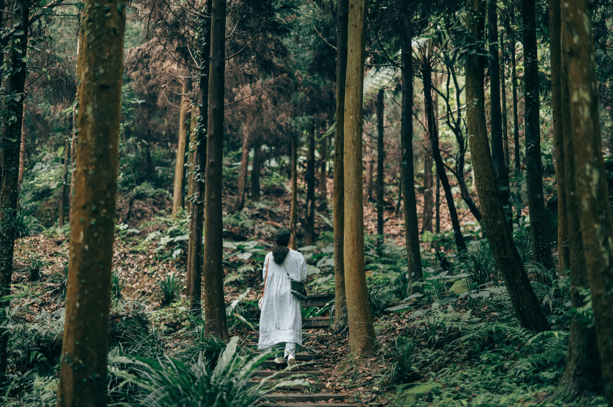
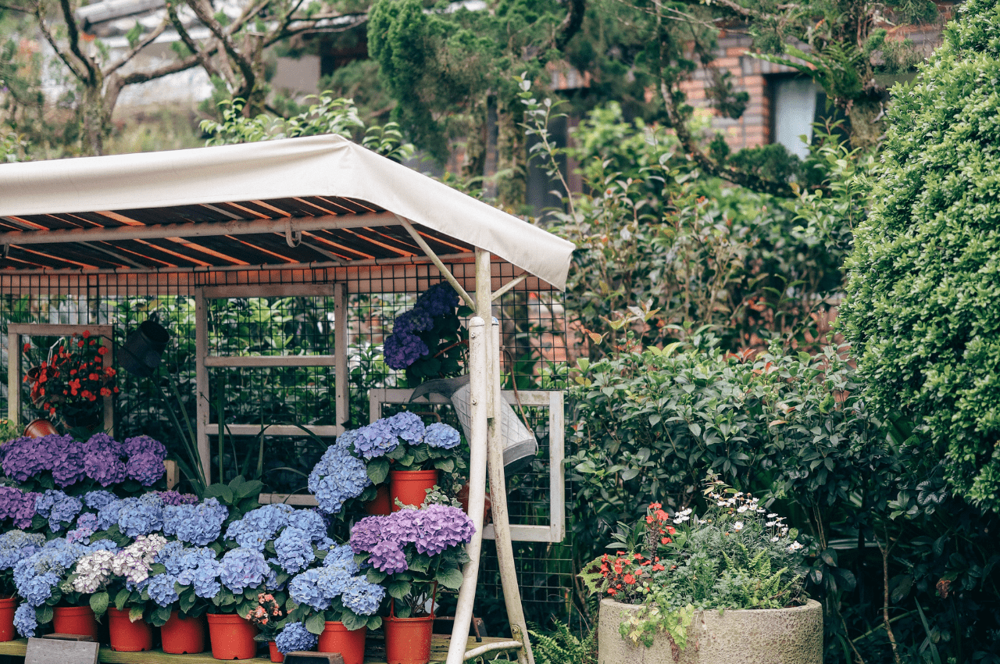
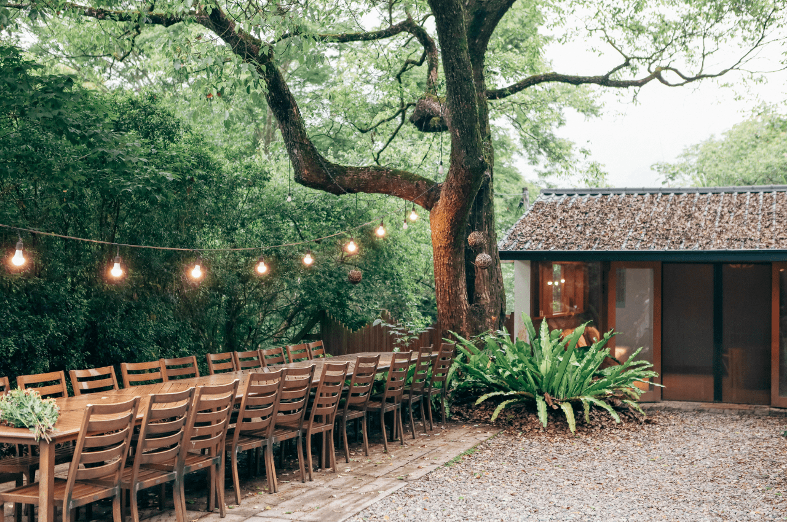

行程特色
獻給花藝初學者的入門旅程：比起專業技能，到森林裡來場春意盎然的香草花藝旅程，我們期待與您分享以花朵闡述心意的療癒體驗。享受一場自然愜意的美感時光：學習用自己的雙手來妝點花草，向大地提取素材，添飾、妝點、再愜意擺豎。
走進薰衣草森林，品味由自然取材的花藝餐桌饗宴。因為一場療癒花藝旅程而找回生活與創作的力量：和專業花藝師一起在森林裡採集蕨類、搭配鮮嫩花材，佈置有嬌滴花朵佐餐的花藝餐桌景致。在香草香氛中，進入座落在森林旁的小酒館，享受一頓精緻晚餐。並在離開以前，藉由森林野餐與香草慢食午宴開一場歡送慶典。
品味由自然取材的花藝餐桌饗宴，讓每一份好好生活的心意延續至指尖與餐桌上的感動。透過森林花藝旅行，從看似漫不經心、其實很有節奏和韻律的創作過程中擺脫壓力。在花朵的生命週期裡，親觸生命的盛放、和美好相遇，實現好好生活的精緻嚮往。



行程說明
【Day1】
▍台中高鐵站7號出口集合，踏上旅途
下午 13:00
台中高鐵站7號出口集合，請搭手扶梯下乘至B1載客區，服務團隊將手持品牌立牌於此迎接您。前往薰衣草森林園區的路上，將停留便利商店讓旅客購買點心後再上山、入園。
▍抵達薰衣草森林「香草House」民宿
在導遊以及民宿管家將帶領旅客辦理check-in。稍作休息後，準備進行幽靜森林導覽體驗，在專業花藝老師的帶領下探索森林內的豐富植物故事。
▍自然花藝課程：園區導覽/採集鮮花
無需花藝基礎和門檻的自然體驗：利用自然素材，以溫潤堅實的樹皮為基底、平鋪在餐桌上。以親手採摘的森林植被以及當季花材所織成的花束、妝點桌花飾品，為稍晚共襄盛舉的大地餐桌添飾。
▍森林秘境：大樹的輕語體驗
走進森林，與大樹來一場秘境裡的沈默對話，你會發現，原來大樹中有著我們不曾聽過的聲音，那是來自大樹的輕語，也呼應著你內心深處的聲音。不論是生活或工作，我們都在每一次呼吸與收放間，練習找到最適合自己的平衡點，向心目中理想的狀態前進。
▍自然花藝餐桌體驗
當夜幕降臨、享受難得的慢活時光。在與花藝老師共同創作的花藝擺飾品之間，展開浪漫的鮮食晚宴，品嚐本質旅行專屬的、天然鮮食餐點（餐點內容依季節變換，請以行前說明與活動安排為準）。
▍晚餐：大地小酒館「香草慢食料理」
森林主廚以精湛的記憶搭配台灣在地好食材，將薰衣草森林三大元素「自然」、「美學」、與「花園」顯露在道道餐點內，堅持傳遞最幸福的料理滋味。
▍夢幻夜間森林導覽
走入白天對外開放的森林園區，少了遊客、在溫煦燈光下享受包場森林中的靜謐清幽。在安靜的森林中與自己對話，感受夜間森林裡的舒爽溫度，感受無人的、不一樣的薰衣草森林（遇雨將視情況而更改行程順序）。
【Day2】
▍早餐：早晨大地野餐體驗
清晨，推開窗、走向戶外，嗅著森林清新氣息，帶上主人親手製作的野餐籃早餐，在園區尚未有遊客時，選擇喜愛的綠意角落，享受愜意的山居生活，和安靜與自己對話的美好時光。
▍小型花藝飾品創作
將昨日佈置在餐桌上的花材轉變為屬於自己的手綁花花束作品，延續花藝創作的感動與療癒，亦歡迎將作品帶回家留作紀念。
▍午餐：森林裡的大地餐桌
以在地農作的安心食材，結合廚師的巧手創意，在森林肥沃的土壤上、陰涼的樹蔭下，享用大自然孕育的美好料理。讓旅人在森林的風景裡、在微風的吹拂中，感受土地最溫暖的原貌色彩。
▍漫步薰衣草森林園區 自由活動
在薰衣草森林裡自由散步，有醉人的花香、鮮麗的色彩、自然的鮮甜，展開獨屬於你的大地巡禮。你可以選擇造訪年輪郵局、許願樹，寄一封信給若干年後的自己、給有緣的陌生人，製造一次美好的不期而遇；許下對生活的期許、對理想生活的響往。
▍告別薰衣草森林，啟程台中烏日高鐵站
備妥行李、離開薰衣草森林，搭乘本質旅行舒適商務接駁車前往台中烏日高鐵站。短暫告別、期待下次旅程的美好相遇（為防塞車狀況影響行車時間，建議旅客購買
16:30 以後的高鐵票）。
注意事項
一、出發前旅客任意解除契約需收取消費用，其額度如下：
- 通知於出發日前30日，無需賠償任何旅遊費用。
- 通知於出發日前7日內，賠償旅遊費用百分之五十。
二、嚴重特殊傳染性肺炎 COVID-19
注意事項：為配合中央政府規定防控疫情，具「列入第三級警吿國家或地區」活動史者，需進行
14
天居家檢疫。若您有上述旅遊史，務必事先告知，我們將全額退款。
三、配合「體溫過高者依傳染病防治法第 37 條第 1 項第 5 款及第 3
項規定」，旅行社於出發當日將進行體溫檢測，旅客經額溫槍量測達
37.5
度或有呼吸道症狀，將勸導其返家休息及就醫並婉拒旅客參團，也將全額退款。
**以上資料參考至本質旅行，純屬作業學習用途。